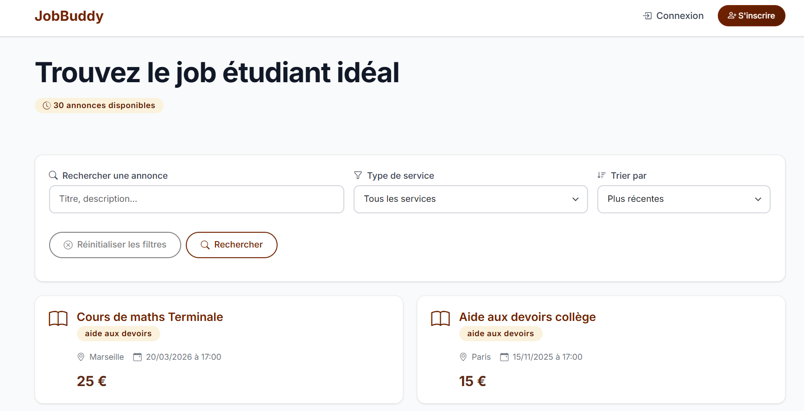
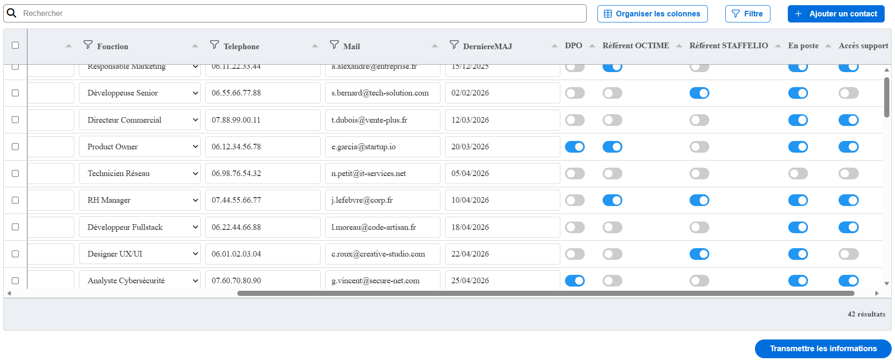

Profil
Qui suis-je ?
En deuxième année de BUT informatique, je suis quelqu’un qui sais s’organiser et être rigoureux, je cherche à acquérir des compétences et un savoir-faire. Je m’intéresse beaucoup aux technologies de l’informatique comme les langages de programmation web : HTML, CSS, PHP
J'aime la musique et le sport, notamment le tennis où je pratique toutes les semaines. Tous les ans je pars voir ma famille au Vietnam et en même temps j'en profite pour découvrir de nouvelles choses.
Mon parcours scolaire
- 2024 - 2027 : BUT Informatique - IUT de Bayonne et du Pays Basque
- 2021 - 2024 : Lycée Gaston Fébus - Orthez
Mon parcours professionnel
- Restaurant An-Nam : CDI - Serveur - 2023 à aujourd'hui
- Stage de développement OCTIME : CDD - Développeur front-end - 7 avril 2026 au 12 juin 2026
Mes compétences
Hard Skills
- HTML / CSS
- JAVASCRIPT / TYPESCRIPT
- PHP
- PYTHON
- C++
- MYSQL
- Java
Soft Skills
- Travail d'équipe
- Communication
- Résolution de problèmes
- Adaptabilité
- Methode agile SCRUM
Mes projets
Job-buddy

JobBuddy est une appliclation web réalisée dans le cadre de ma formation à l'IUT de Bayonne et du Pays Basque. Elle a pour but de faciliter la recherche de petit boulot court pour les étudiants et aux particuliers qui recherchent de l'aide. JobBuddy offre une expérience utilisateur fluide et efficace, permettant aux utilisateurs de trouver rapidement des opportunités d'emploi correspondant à leurs compétences et à leurs préférences. Cette application web a été développée par 5 étudiants, dont moi-même, en utilisant la méthode agile SCRUM pour assurer une collaboration efficace et une réalisation rapide des fonctionnalités. Nous avons utilisé un modèle d'architecture MVC (Model-View-Controller) pour structurer notre code de manière organisée et maintenable, avec les technologies suivantes : HTML, CSS, JavaScript pour le frontend, PHP pour le backend et MySQL pour la base de données.
Tableau OCTIME

Durant mon stage de développement chez OCTIME, j'ai eu l'opportunité de travailler sur une mission qui m'a été confiée. Il s'agissait de développer un tableau de bord pour la gestion des ressources humaines. Ce projet avait pour objectif de fournir aux clients de l'entreprise une interface permettant de gérer les resources humaines, leurs horaires de travail, leurs congés, etc. J'ai utilisé mes compétences en développement web pour créer un composant tableau à l'aide d'une librairie nommée Tabulator r, en utilisant des technologies telles que HTML, CSS, typescript et leur WINDEV un logiciel de développement d'application. J'ai également dû travailler en équipe afin de pouvoir intégrer mon tableau à leur projet.
Mes contacts
sddinh@iutbayonne.univ-pau.fr
Téléphone : +33 7 76 81 33 75